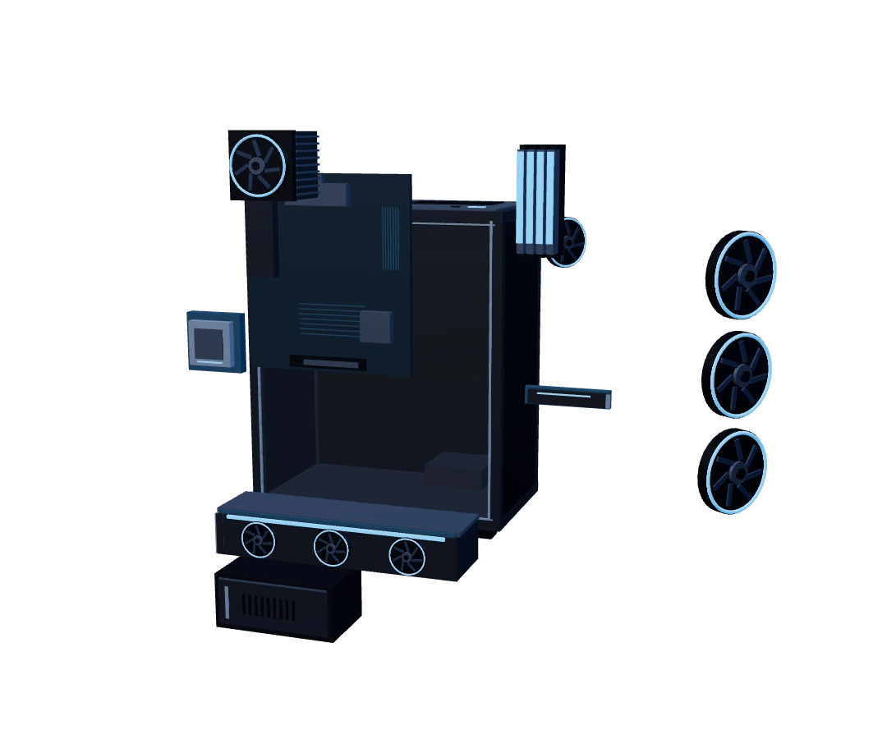
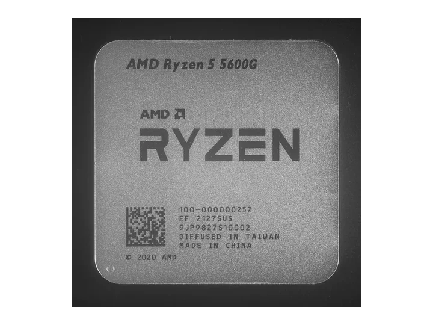
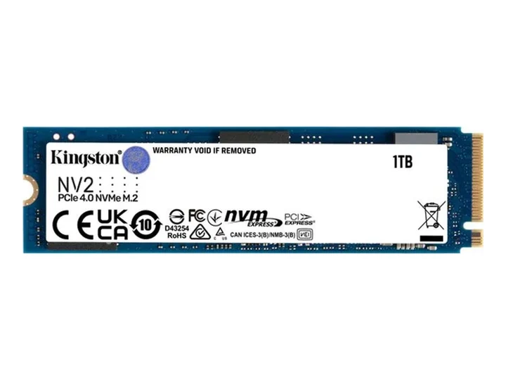
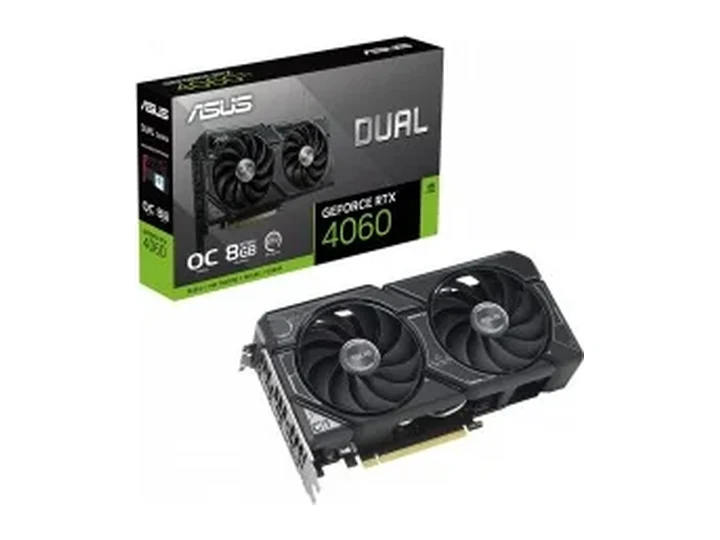
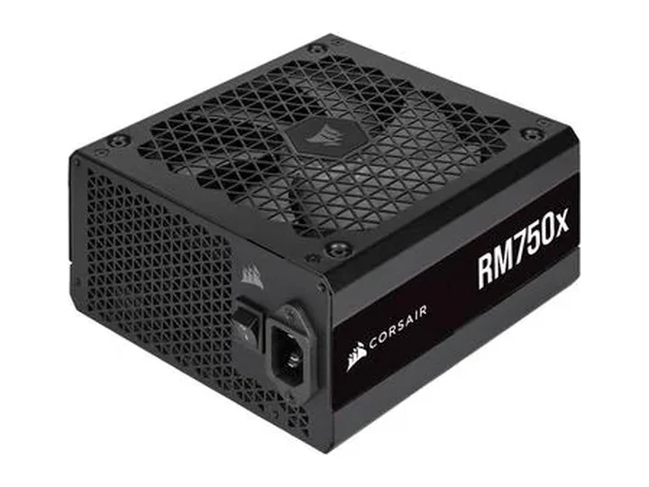
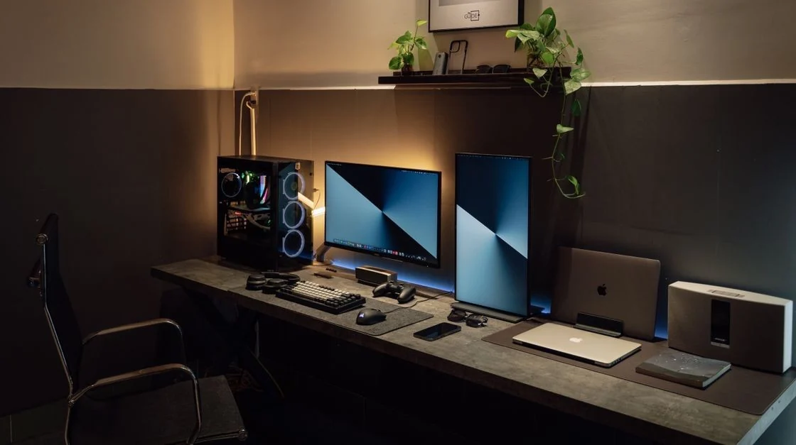
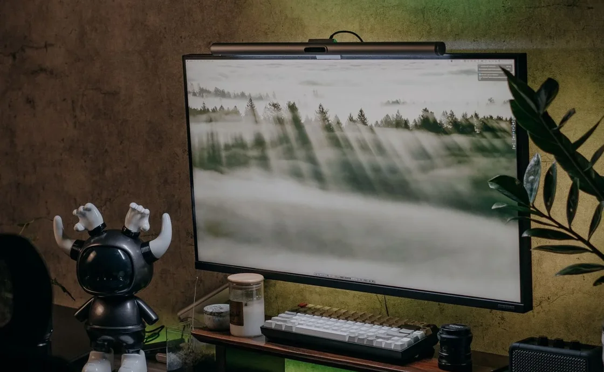
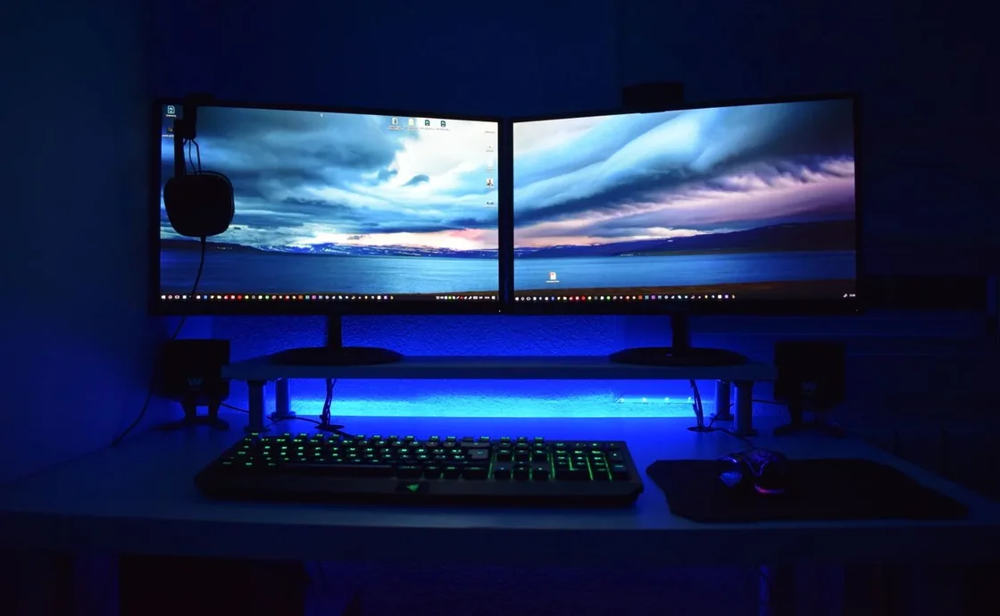

Monte seu primeiro PC sem medo.
Veja o que cada peça faz e monte um PC para o seu dia a dia, seja pra jogar, estudar, trabalhar ou criar conteúdo.
Explore o gabinete

Escolha uma peça no gabinete pra ver os modelos do catálogo.
Por dentro do seu PC

Ver a função de cada peça
- Gabinete
- Protege as peças e deixa espaço para o ar circular.
- Ventoinhas
- Renovam o ar dentro do gabinete.
- Placa-mãe
- Conecta as peças para que elas troquem informações.
- Processador
- Executa as instruções dos jogos e programas.
- Cooler
- Retira o calor do processador.
- Memória RAM
- Mantém temporariamente os dados em uso.
- SSD
- Guarda jogos e arquivos mesmo com o PC desligado.
- Placa de vídeo
- Desenha as imagens que aparecem na tela.
- Fonte
- Distribui energia para as outras peças.
Conheça os componentes do seu PC
Abrir o guia completo das 19 categorias
-

Processador
É o cérebro do PC. Segue as instruções dos programas e coordena o trabalho das outras peças.
-

Memória RAM
É a mesa de trabalho. Mantém à mão os arquivos e dados que você está usando naquele momento.
-

SSD
É o armário. Guarda jogos, programas e arquivos mesmo depois que você desliga o computador.
-

Placa de vídeo
Pense nela como a artista do PC. É ela que desenha o que aparece na tela, como o cenário de um jogo.
-

Fonte
É como o coração. Distribui a energia da tomada para todas as peças do computador.
Ambientes de referência

Setup para jogar
O monitor principal fica de frente e a segunda tela, na vertical, deixa espaço na mesa.

Setup para estudar
Uma luminária e uma área para o caderno ajudam na hora de ler e fazer anotações.

Setup para criar conteúdo
Uma tela ampla ajuda na edição. Microfone e fones ficam à mão para gravar e revisar o áudio.

Setup para programar
Uma tela maior deixa o código visível enquanto o terminal roda no notebook.

Setup para trabalhar
A mesa deixa espaço para documentos ao lado do monitor e do notebook.
Configurações prontas
Carregando configurações…